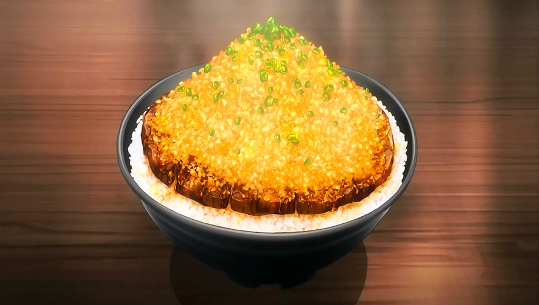

Chaliapin Steak Don

This is a delicious bowl of shiso and umeboshi flavored rice that contains marinated steak too.
Ingredients For Donburi
- 270 grams steak
- 350 grams onions (finely diced)
- 1/4 teaspoon salt
- Black pepper
- 1 tablespoon oil
- 2 tablespoons soy sauce
- 1/3 cup red wine
- 2 tablespoons butter
- 2 rice cooker cups rice
- 70 grams umeboshi(10%) (pitted and minced)
- Scallions for garnish
Chaliapin Steak Don Method!
- Finely dice your onions.
- Throw them into a bowl,sprinkle on the salt and mix it.
- Make a bed of onions on a tray.
- To prep the steak, cut some lits into it about one quarter apart and one third of the thickness
deep.
- Turn over the steak and repeat the process at the same angle.
- Set it on the bed of onions and bury it under more onions.
- Cover this up and leave it in the fridge overnight.
Umeboshi Prep
- Remove the pits from the umeboshi.
- Once they are all pitted, use your knife to mince and make a paste.
Cooking Method
- Add oil to a hot pan over medium heat.
- Add the steak.
- Let it cook undisturbed untill it is cooked about one third of the way up the sides.
- Flip it over and make sure its done mediun rare.
- Take the steak and let it rest somewhere else.
- Saute the onions untill they are tender and translucent.
- Idea is to get them a little brown.
- Add the soy sauce untill and let it cook untill there is no liquid left.
- Glaze the pan with the red wine.
- Once it no longer smells like alcohol, add the butter and whisk it.
- Add the umeboshi into fresh rice and distribute it evenly.
- Put it into a bowl.
- Slice the steak.
- Line it over the rice.
- Add the onion sauce on top like a mountain.
- Add scalions on top.
Return to the home page!
Return to The Top!